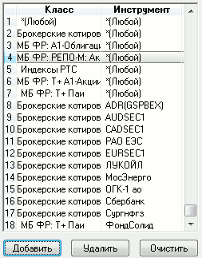
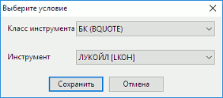
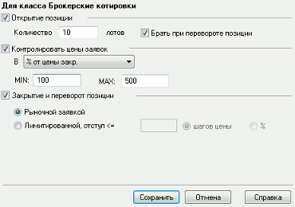

Настройка параметров инструментов
меню Система / Настройки / Параметры инструментов...
Назначение
Установление возможных границ цены заявки, параметров открытия и закрытия позиции по различным инструментам.
Если по инструменту назначена граница, то система QUIK производит проверку
соответствия цены заявки заданной границе и предотвращает передачу в торговую
систему биржи заявок с заведомо ошибочным значением цены.
- Контроль диапазонов приемлемых цен выполняется на Рабочем месте пользователя QUIK. Это означает, что для выполнения проверки необходимо получение значений указанных параметров (в зависимости от настроек - для выбранного инструмента, для всех инструментов выбранного класса либо для всех инструментов) с сервера QUIK. Если в настройках программы включен признак получения данных «Исходя из настроек открытых пользователем таблиц» (меню Система/Настройки/Основные настройки..., раздел «Программа» / «Получение данных»), то при установке диапазонов цен нужные параметры автоматически добавятся в список получаемых данных.
Настройка

В левой части окна «Параметры инструментов» отображается список настроенных диапазонов. Кнопки в нижней части окна позволяют редактировать данный список:
- «Добавить» – добавить новый диапазон, При добавлении нового диапазона заполните следующие поля:

- «Класс инструмента» – выбор названия класса либо значения «*(Любой)».
- «Инструмент» – выбор названия инструмента либо значения «*(Любой)».
Возможно добавление следующих типов диапазонов:
- «Для всех» – в диапазон включены все инструменты всех классов;
- «Для класса» – в диапазон включены все инструменты указанного класса;
- «Для инструмента» – в диапазон включен указанный инструмент выбранного класса или всех классов.
- Наиболее приоритетным является диапазон значений для инструмента определенного класса. Если инструмент не задан, то проверяется ограничение для всех инструментов определенного класса, и в последнюю очередь – глобальная настройка диапазона для всех инструментов по всем классам.
- «Удалить» – удалить выбранный диапазон,
- «Очистить» – удалить все диапазоны из списка.
В правой части окна «Параметры инструментов» доступны для редактирования настройки выбранного диапазона:

- Признак «Открытие позиции» – задание параметров новой заявки, используемых по умолчанию:
- Поле «Количество <…> лотов» – задание рабочего количества в лотах.
- Флажок «Брать при перевороте позиции» – использовать объем, указанный в поле «Количество <…> лотов» при выполнении операции переворота позиции, вызываемой из окна «Состояние счета» с помощью кнопки «Перевернуть», расположенной на вкладке «Позиции».
- Признак «Контролировать цены заявок» – задание возможных границ цены заявки в виде максимального отклонения от текущего значения выбранного параметра: цены закрытия, средневзвешенной цены либо цены последней сделки.
- Поле «MIN» – предельное отклонение цены вниз. Параметр контролируется только в заявках на продажу.
- Поле «MAX» – предельное отклонение цены вверх. Параметр контролируется только в заявках на покупку.
- Если добавлено ограничение с точкой отсчета отклонения по параметрам «Средневзвешенная цена» или «Цена последней сделки», но значение этих параметров не задано или равно «0», то отклонение считается от значения параметра «Цена закрытия».
- При установке только одной из границ проверяется только одно предельное значение цены.
- Признак «Закрытие и переворот позиции» – настройка способа закрытия и переворота позиции:
- Переключатель «Рыночной заявкой» – позиция закрывается рыночной заявкой.
- Переключатель «Лимитированной, отступ < =» – позиция закрывается лимитированной заявкой. При выборе данного способа закрытия позиции укажите величину отклонения цены выставляемой лимитированной заявки от лучшей встречной цены в процентах или в шагах цены.
Настройки применяются по умолчанию для закрытия и переворота позиций по командам из таблицы «Состояние счета».
Поле «Глубина стакана» – задание глубины стакана котировок на покупку и на продажу. Значение по умолчанию: «0» (получение всех доступных котировок).
Параметры диапазона устанавливаются нажатием кнопки «Сохранить». Кнопка «Отменить» предназначена для закрытия окна без сохранения изменений. Нажатие кнопки «Справка» вызывает справку по данным настройкам.
По одному инструменту либо классу можно задать только один диапазон цен. Повторное назначение диапазона допустимых цен с другими параметрами приведет к отмене предыдущего ограничения и включению нового.
Проверка включается установкой флажка «Проверять попадание цены в диапазон» в меню Система/Настройки/Основные настройки..., раздел «Торговля» / «Заявки».
Если при подаче заявки не пройдена проверка на попадание цены в указанный диапазон, то на экране появляется соответствующее сообщение с запросом разрешения исполнения заявки. При нажатии кнопки «Да» проверка игнорируется, и заявка выставляется на покупку / продажу.
- Сервер системы QUIK может проводить дополнительную проверку цен заявок на соответствие диапазону цен, установленных на сервере администратором системы. Эта проверка не зависит от настроек ценовых диапазонов, заданных пользователем.
См. также: Формат файла настроек.